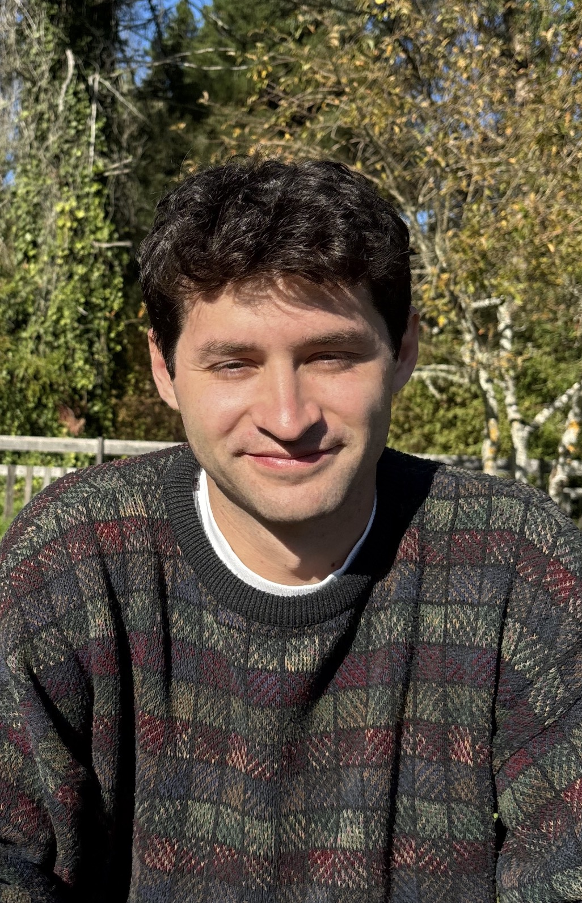

Cooper Desmond
Research Professional, University of Chicago Booth School of Business
I study how institutions (courts, benefit programs, schools) shape people’s health, mobility, and civic lives. My work frequently depends on linking administrative records across institutions in collaboration with the organizations that hold them, such as community health centers and county agencies. Methodologically, I’m interested in using instrumental variable designs with multiple treatment margins to answer policy-relevant questions. In addition, I’m interested in scaling and refining probabilistic record linkage models.
Policy Research
Working papers
Long-Term Effects of Felony Conviction on Voter Registration and Recidivism: Evidence from Harris County
Working paper
In Texas, a felony conviction removes a person from the voter rolls until their sentence is fully discharged, after which they must re-register on their own. Using the random assignment of felony cases to courts in Harris County, this paper estimates the effect of a felony conviction on voter registration alongside recidivism, adding civic participation to the recidivism and labor-market outcomes that leniency designs usually study. Because disenfranchisement follows any felony conviction rather than a particular sentence, the instrument is coarsened to each court’s felony-conviction rate, collapsing prison, jail, probation, misdemeanor, deferral, and dismissal into convicted and not convicted. Building on Humphries et al. (2025), the paper shows that the resulting estimate equals the effect of conviction for cases whose conviction status the court changes, plus bias from cases a stricter court re-sentences or resolves differently without changing whether they are convicted, and develops interpretations of the bias.
Publications
The association of patient and disease characteristics with the overtreatment of low-risk prostate cancer from 2010 to 2016 (DOI)
Cooper Desmond, Sumedh Kaul, Aaron Fleishman, Ruslan Korets, Peter Chang, Andrew Wagner, Simon P. Kim, Nima Aghdam, Aria F. Olumi, Boris Gershman
Prostate Cancer and Prostatic Diseases, 2024
Although active surveillance is the preferred management for low-risk prostate cancer (PCa), some men remain at risk of overtreatment with definitive local therapy. We hypothesized that baseline characteristics may be associated with overtreatment and represent a potential source of health disparities. We therefore examined the associations of patient and disease characteristics with the surgical overtreatment of low-risk PCa. We identified men aged 45–75 years with cT1 cN0 cM0 prostate adenocarcinoma with biopsy Gleason score 6 and PSA < 10 ng/ml from 2010–2016 in the National Cancer Database (NCDB) and who underwent radical prostatectomy (RP). We evaluated the associations of baseline characteristics with clinically insignificant PCa (iPCa) at RP (i.e., “overtreatment”), defined as organ-confined (i.e., pT2) Gleason 3 + 3 disease, using multivariable logistic regression. We observed an ~27% reduction in rates of overtreatment of men with low-risk PCa over the study period. Several patient, disease, and structural characteristics are associated with detection of iPCa at RP and can inform the management of men with low-risk PCa to reduce potential overtreatment.
Evaluation
I’ve led evaluations for health centers and nonprofits, ranging from mixed-methods program reviews to quasi-experimental impact studies built on linked administrative data.
Disability Insurance, Legal Aid, and Prenatal Care: Evidence from a Farmworker Health Center
In progress
Evaluates whether the clinic’s medical-legal partnership and California State Disability Insurance enrollment improve prenatal care access and birth outcomes among farmworker patients, using linked health and disability-benefits records with synthetic and within-clinic controls.
Shared Success Midpoint Evaluation Overview (Link)
Cooper Desmond, Barbara Magnoni
Aspen Institute, 2025, with EA Consultants and the NYU Financial Access Initiative
Mixed-methods evaluation of Shared Success, an Aspen Institute Economic Opportunities Program demonstration in which 11 community development financial institutions (CDFIs) across the United States built job-quality advising into the support they give small-business owners. Working with the Financial Access Initiative and EA Consultants, I led the evaluation’s quantitative and qualitative data collection and analysis. At the midpoint, surveys and interviews with participating business owners documented which job-quality changes they had made, why they made them, what stood in the way, and what they planned next. At endline, the evaluation returned to the owners and added surveys and interviews with their workers.
Methods
Selection on Observables as an IV Thought Experiment (PDF)
Cooper Desmond
Note, 2026
Reads OLS with controls as IV in which the regressor instruments for itself. The selection-on-observables conditions become the IV validity and relevance conditions, and the variance inflation factor is the inverse of a first-stage R-squared.
Splink and the Fellegi-Sunter Model (PDF)
Cooper Desmond
Working notes, 2026
A walkthrough of the Fellegi-Sunter record linkage model as implemented in Splink: the conditional independence assumption, match weights, EM training, and how sampling and blocking make parameter estimation feasible at scale.
Neuroscience
As an undergraduate at Williams College, I studied how fear memories are extinguished and updated.
Multiple-context extinction strengthens fear suppression through hippocampal dopamine D2R-dependent memory updating (DOI)
Eve A. Hammerman, Suzanne R. Penna, Shania E. Gonzalez, Shiv Patel, Carter Roebuck, Emily K. Lock, Cooper Desmond, Yuichi Fukunaga, Gwyneth C. Maloy, Victor A. Cazares
Neuropsychopharmacology, 2026
Multiple Context Fear Extinction Remodels Fear Engram Architecture (DOI)
Cooper Desmond
BA thesis, Williams College, 2024, Highest Honors in Biology